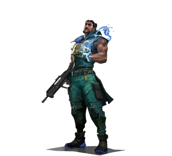

| Varun Batra, ex agente del grupo de trabajo, es el propietario inesperado de un antiguo y poderoso artefacto con el poder de controlar y convocar masas de agua de la nada. Batra, que anteriormente trabajaba para REALM para recuperar este tipo de artículos del mercado negro y devolverlos a sus legítimos dueños, era considerado un hombre de buen corazón, pero también una fuerza letal con la que lidiar en combate. Su dedicación a la causa a través de años de servicio luchando contra criminales le valió una reputación de héroe y leyenda. Todo eso cambió con una misión a Mumbai. El artefacto que REALM había enviado a su equipo para recuperar esta vez sería diferente a todo lo que el grupo de trabajo haya tratado antes, incluso para su línea de trabajo. Cuando finalmente cruzó la habitación que contenía la reliquia, Batra descubrió un pedestal en forma de mano, con cinco anillos y un brazalete. Al entrar solo en la habitación, el artefacto comenzó a activarse, atrayendo a Batra, separándose de su pedestal y adhiriéndose a sus manos. Batra podía decir que tenía un poder inmenso, y no era el único. Se dio la vuelta para encontrar a uno de sus colegas, Greaves, que lo sujetaba a punta de pistola y le exigía que le entregara el artefacto para poder tomarlo como una facción secreta y rebelde que había estado operando dentro de REALM. Mientras Batra se mantenía firme en desafío, Greaves abrió fuego y el brazalete se activó, invocando una pared de agua entre los dos hombres que bloqueó el paso de las balas. Cuando la pared se disipó, Batra huyó y Greaves se quedó en una habitación vacía. No queriendo que Batra tuviera la oportunidad de informar al resto de REALM lo que había intentado hacer, Greaves incriminó a Batra por robar intencionalmente la reliquia y tratar de matar al capitán en el proceso. Usando esta historia inventada y su rango en la fuerza, Greaves envió convoyes tras Batra con la orden específica de matar a Batra en lugar de simplemente capturarlo, lo que lo obligó a huir por todo el sur de Asia. Sin embargo, con los poderes del brazalete ahora adherido a él, Batra era más que capaz de mantenerse a salvo de todos los hombres que REALM envió para eliminarlo, pudiendo invocar escudos y paredes de agua para protegerse y barrer a sus enemigos. Después de casi dos meses de ser perseguido por REALM, llegó un salvavidas en forma de Protocolo VALORANT, que parecía tener un interés peculiar en él específicamente. Batra accedió a una extracción y fue recogido por la organización, lo que le permitió escapar de la persecución de REALM para siempre. Con su reclutamiento como vicepresidente, Batra se convirtió en su vigésimo primer agente, "Harbor". Ahora, tiene una nueva misión en un conflicto muy diferente, ya que el Protocolo busca respuestas detrás de los poderes y orígenes de su brazalete, y para qué podrían estar usándolo sus adversarios de Omega. |
 |